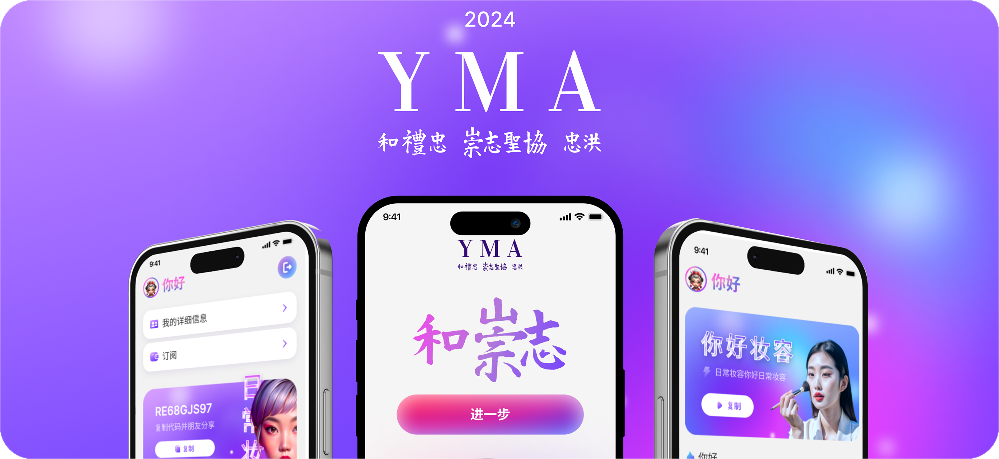
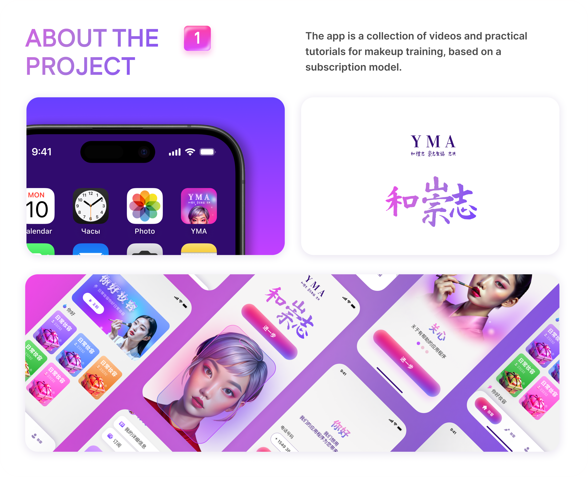
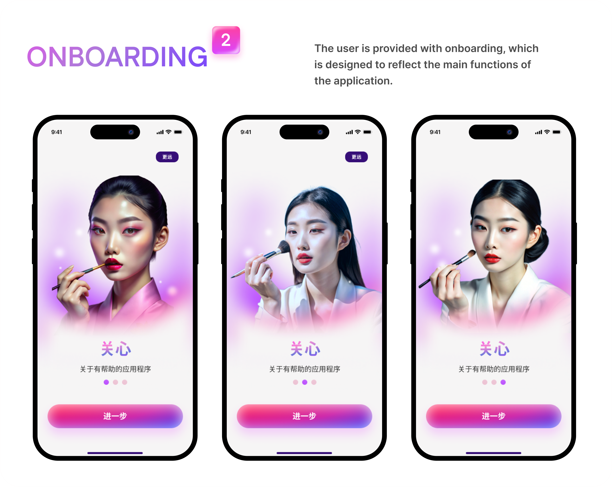
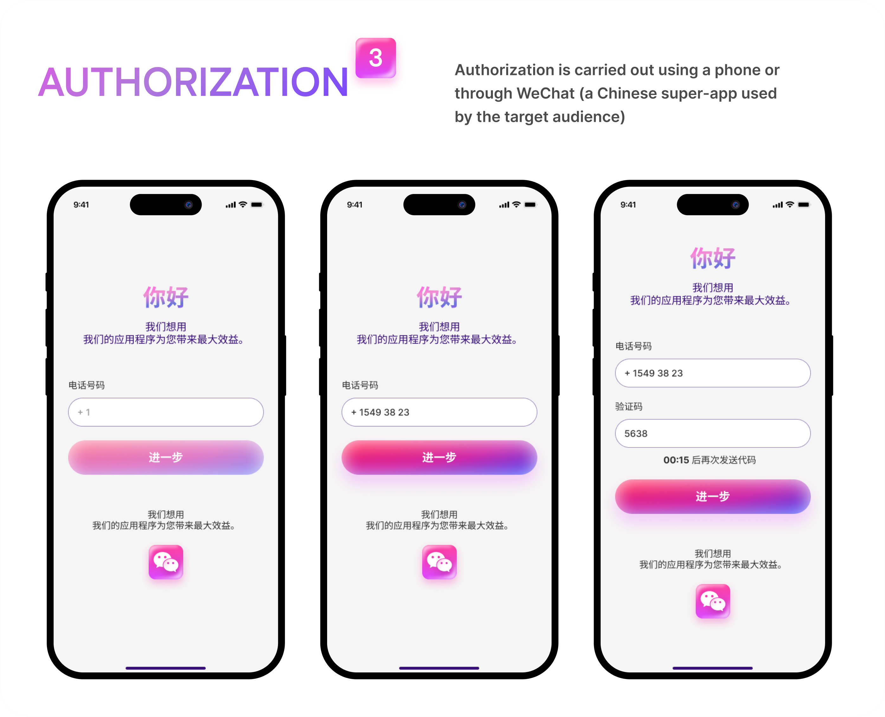
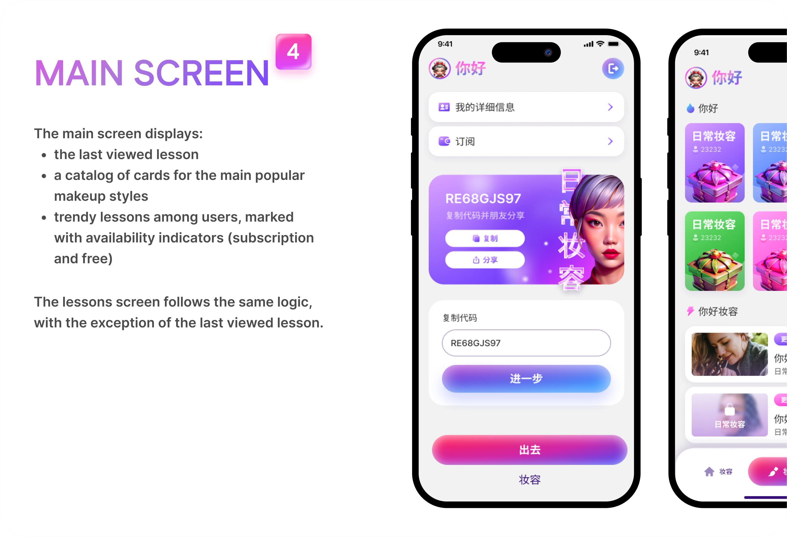

BEAUTY EDTECH
СФЕРА
SOLO PRODUCT DESIGNER
РОЛЬ
100% УСПЕХ UX-ТЕСТА
РЕЗУЛЬТАТ
О ПРОЕКТЕ
Мобильная образовательная платформа с пошаговой интерактивной практикой макияжа и персонализированными треками обучения для азиатского рынка.
Контекст и Проблема
Бизнес-задача: Спроектировать и валидировать концепт микромодульного EdTech-приложения для обучения макияжу с учетом специфики азиатской аудитории.
Пользовательская боль: Длинные видеоуроки вызывают утомление; ученицы теряют фокус и бросают занятия из-за отсутствия пошаговой синхронизации с реальной практикой.
Ограничения: Сжатые сроки (6 недель), проектирование в соло под iOS/Android и подготовка дизайн-системы для быстрой передачи в разработку.

Приоритизация и Скоупинг
Что намеренно вырезали из MVP: Отказались от общей социальной ленты, консультаций с экспертами 1-на-1 и сложной рейтинговой геймификации в пользу чистоты образовательного пути.
Core Loop: Короткий опрос на уровень навыка → Микроурок: «Шаг видео → Автопауза → Практика» → Фиксация прогресса в трекере за 3 клика.

Реализация и UX-Логика
Онбординг и активация: Простой квиз из 3 вопросов сразу формирует персональный учебный план, исключая когнитивную перегрузку при первом запуске.
Ключевые флоу: Внедрили паттерн карточек уроков с градацией сложности (Beginner / Intermediate / Pro), крупными элементами управления плеером для работы одной рукой и пошаговым чек-листом косметики.
Системность: Собрали компонентный UI-кит в Figma с токенизированными состояниями кнопок, интерактивными элементами плеера и адаптированной типографикой.



Респондентов успешно завершили интерактивный урок на тестировании кликабельного прототипа
От первого входа в приложение до запуска пошаговой практики макияжа
При навигации в режиме пошагового плеера
РЕТРОСПЕКТИВА
Что выстрелило: Пошаговый формат с автопаузой полностью снял страх ошибки у новичков и получил 100% положительный отклик на UX-тестах.
Что улучшить в v2.0: Добавить режим AR-зеркала с виртуальным наложением направляющих линий макияжа прямо во время урока.